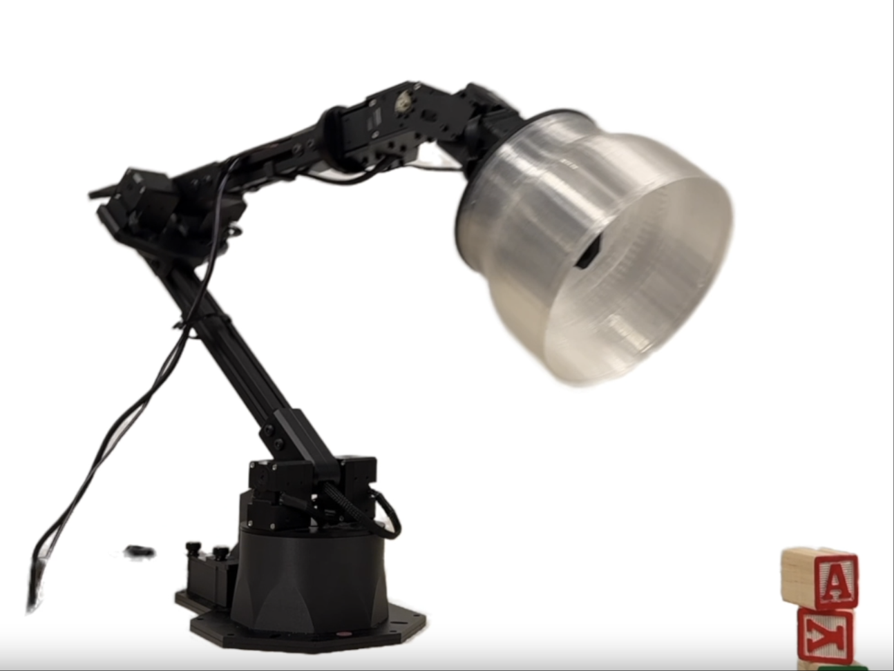
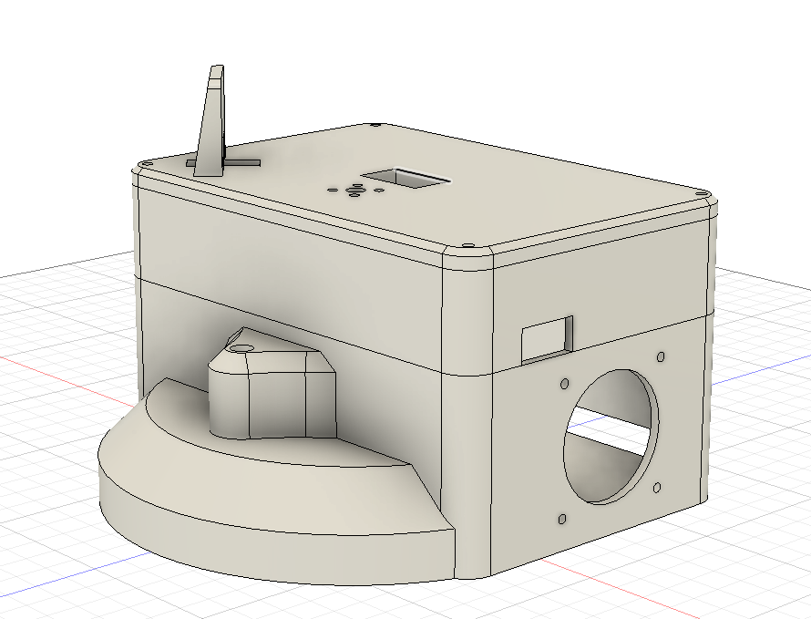
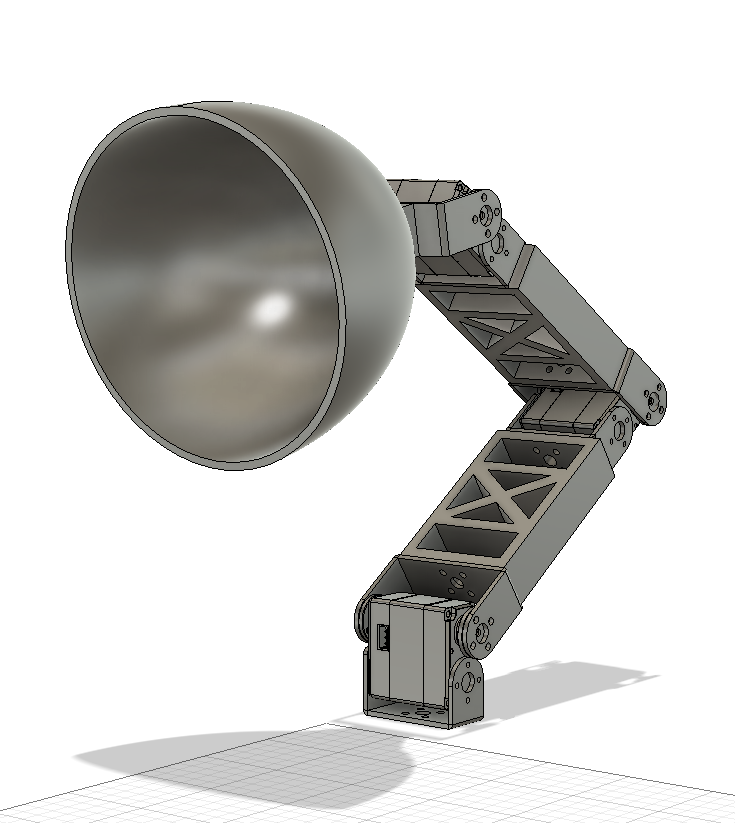
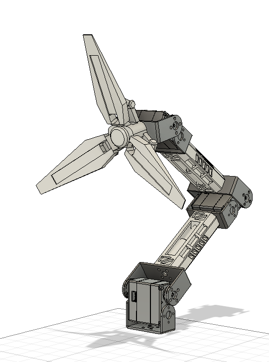

| 项目类型 | 自动控制原理课程综合项目 |
| 核心平台 | 树莓派CM5 (4GB) + STM32F103 |
| 交互方式 | 语音（讯飞ASR）+ 手势（MediaPipe）+ 运动控制 |
| 机械结构 | 3-DOF串联连杆机械臂，飞特STS3215串行舵机 |
| 设计理念 | 借鉴Apple Elegant情感交互台灯 + 《死亡搁浅》奥德拉德克造型 |
本项目的设计灵感来源于Apple Elegant情感交互台灯概念——将传统台灯重新定义为具有情感感知和表达能力的"桌面伴侣"，通过流畅的机械运动和智能交互实现人与物之间的情感连接。

外观造型参考游戏《死亡搁浅》中的肩部机械臂探测仪"奥德拉德克"（Odradek），其发光的四叶片造型简约且极具未来机械美感，正好符合机械臂台灯的功能需求。在此基础上原创设计了台灯的机械细节，多处采用倒角镂空，兼顾物理受力与轻量化，并加入液压杆装饰增强科幻质感。
系统基于树莓派CM5计算模块为核心处理器，集成视觉识别、语音交互、机械臂控制和智能照明等多个子系统，采用分层模块化软件架构：
| 序号 | 硬件名称 | 型号/规格 | 功能描述 |
|---|---|---|---|
| 1 | 主控制器 | 树莓派CM5 (4GB) | 运行Linux，核心处理 |
| 2 | 摄像头 | USB免驱 640×480 | 手势识别 |
| 3 | 麦克风 | USB PnP 48kHz | 语音采集 |
| 4 | 扬声器 | Yundea M1066 USB | 语音播报 |
| 5 | 舵机×3 | 飞特STS3215串行舵机 | 三轴运动控制 |
| 6 | 亮度控制器 | STM32F103 | PWM调光 |
| 7 | LED灯珠 | 高亮LED模组 | 照明输出 |
软件架构分为四层：
run.py，系统启动入口MainController主控制器 + StateMachine有限状态机HandFollowMode（手部跟随）、PetMode（桌宠互动）、BrightnessMode（亮度调节）台灯主体分为底座与机械臂两部分。底座设计为长方体盒子，容纳全部电气元器件与接线，摄像头置于斜侧面，符合日常使用台灯时斜向摆放的习惯。半圆形底座内部设计镂空可放入配重，增强稳定性。

机械臂经历了两版迭代。第一版设计简洁，符合传统台灯造型，用作原理样机快速实现机械功能：

第二版增加了外观设计，融入奥德拉德克设计理念。采用镂空、浮雕等工艺，融入机械转轴、气缸、散热片等浮雕元素强调机械感，发光方式从单条灯带改为三条灯带照明：

台灯采用3自由度串联连杆机构，连杆长度L1 = L2 = 145mm。系统采用几何法进行逆运动学解算，将目标位置表示为等腰三角形参数：
逆解算公式：
其中a = 0.145m为连杆长度。舵机编码与角度的转换关系为：
| 舵机ID | 位置 | 零位编码 | 方向 | 角度范围 |
|---|---|---|---|---|
| 3 | 底座 | 400 | +1 | 0° ~ 136° |
| 2 | 中间 | 500 | -1 | 0° ~ 109° |
| 1 | 顶端 | 475 | -1 | 0° ~ 88° |
系统采用有限状态机（FSM）管理运行状态，状态包括：STANDBY（待机）、LISTENING（监听）、HAND\FOLLOW（手部跟随）、PET\MODE（桌宠互动）、BRIGHTNESS\MODE（亮度调节）。状态转移规则如下：
手部跟随模式：基于MediaPipe实现手部检测，通过像素到世界坐标的转换，经逆运动学解算后驱动舵机，使灯头实时跟踪用户手部位置。
桌宠互动模式：赋予台灯"宠物"特性，通过语音命令触发拟人化动作。支持"卖萌"（左右摇摆）、"跳舞"（节奏摆动）、"点头/摇头"、"打招呼"、"睡觉/醒来"等10+种动作指令。
亮度调节模式：通过手势控制LED亮度，手掌张开程度与亮度成正比（握拳→0%，半握→50%，张开→100%）。
语音系统采用讯飞实时语音转写API，USB麦克风原生48kHz采样率经audioop.ratecv实时重采样至16kHz后送入API识别。语音合成采用Edge-TTS（zh-CN-XiaoxiaoNeural声音），通过mpg123播放。
亮度控制通过USB CDC虚拟串口与STM32通信，协议帧格式为：帧头0xAA + 亮度值（67–101，映射0%–100%），STM32接收后输出对应PWM驱动LED。
class HandFollowMode(BaseMode):
def update(self, frame=None, voice_text=None):
hand_pos = self._detect_hand(frame)
if hand_pos:
x, y = self._pixel_to_world(hand_pos)
b, theta_0, beta = self._calc_ik_params(x, y)
encoders = inverse_kinematics_to_encoders(
b, theta_0, beta)
self._servo_thread.sync_move(
encoders, speed=300)
return True